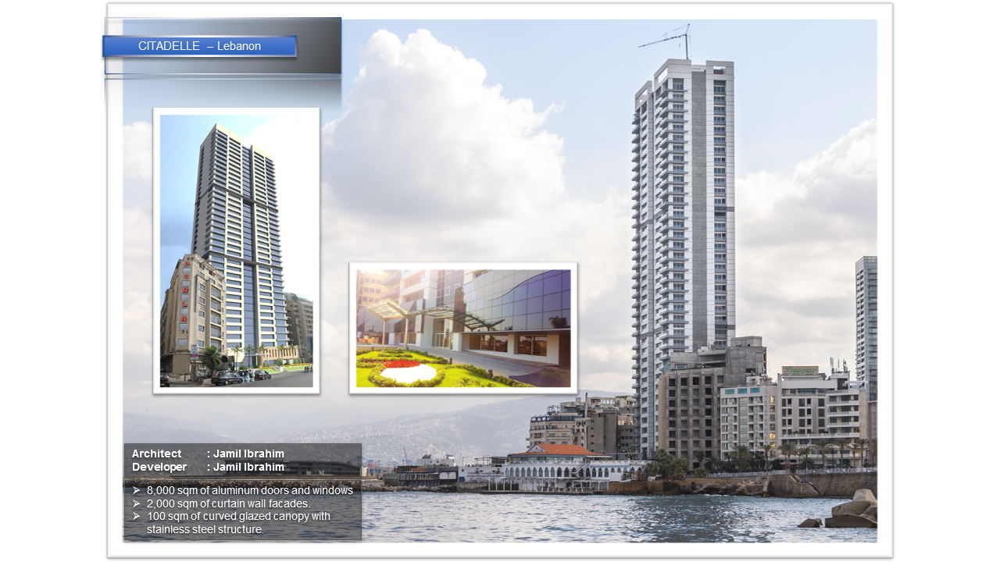
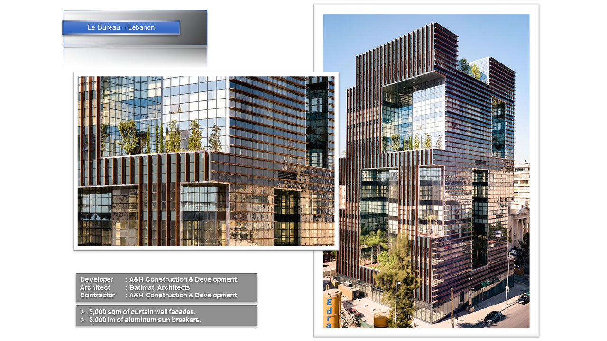
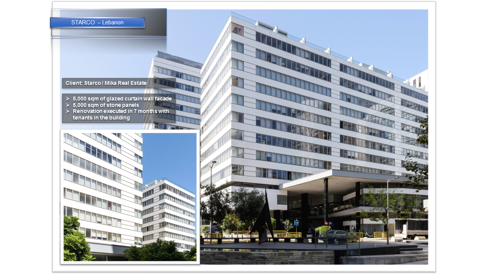
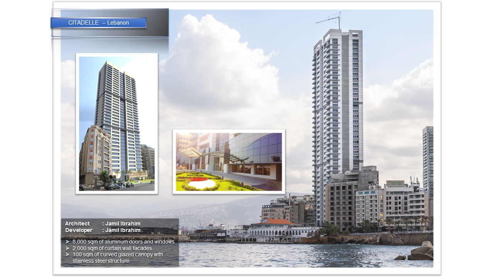
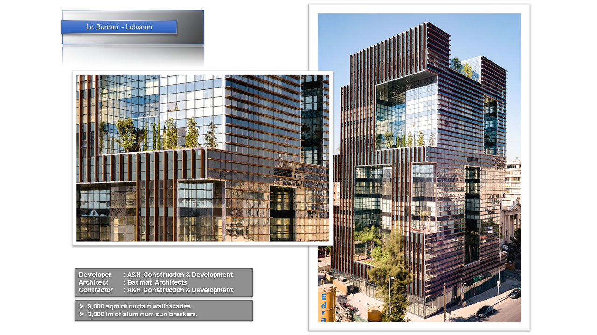
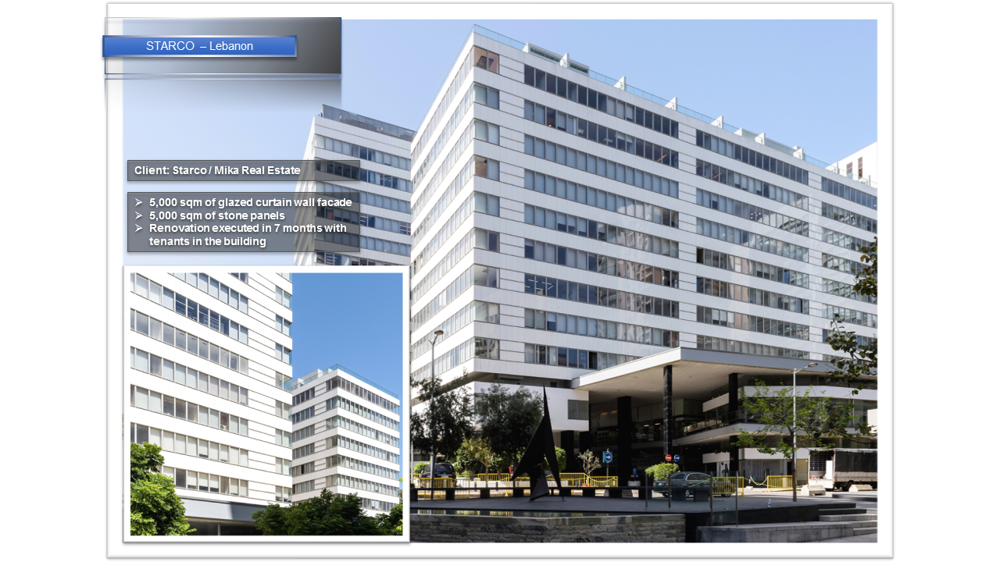

Certification


Construction Project Manager: Facade, Envelope
As a motivated and knowledgeable individual with experience in the aluminum, glazing and renovation field, I’d like to take this opportunity to apply. I would bring to your company a variety of construction site experience in aluminum and glazing, including insights of inspection codes and standards, equipment maintenance, and OSHA construction site safety regulations. Additionally, I have a proven track record of identifying and developing new strategies to leverage new construction innovations. With my previous position as project manager – Glassline Industries, I have constantly exceeded all goals set for me, and am valued for my ability to deal with intractable situations by coming up with robust solutions. I am responsible for inspecting several job sites per month, while assisting in building construction, and assembling glass and aluminum metal components and equipment.
A sample of key contributions includes:
I have extensive experience of over 8 years in this sector and am very keen to join your company. As a market leader in your field, you are able to offer applicants an array of impeccable career opportunities and a position that would present gratifying challenges. My abilities include project budgeting, managing client relationships, negotiating, resolving disputes, and critical thinking.
Thank you,
Hassan Takkush
Here is a list of projects I have successfully completed
 




